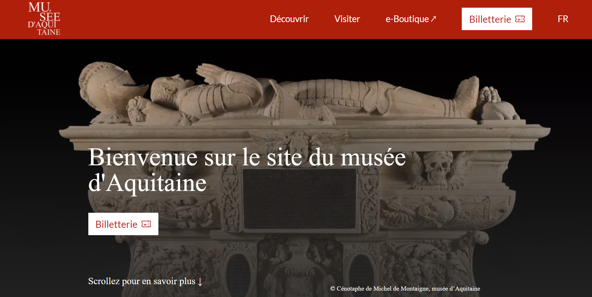
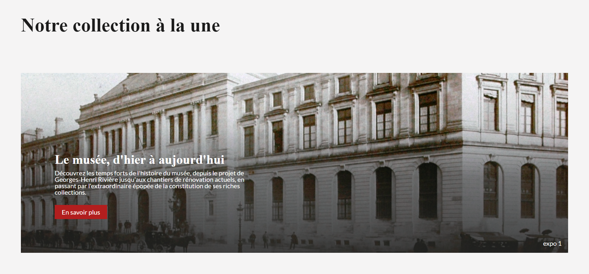
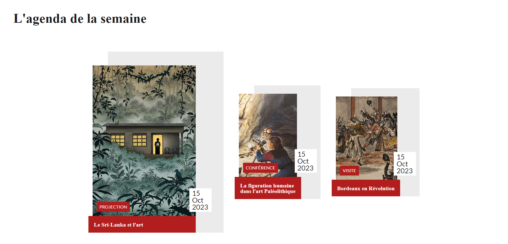
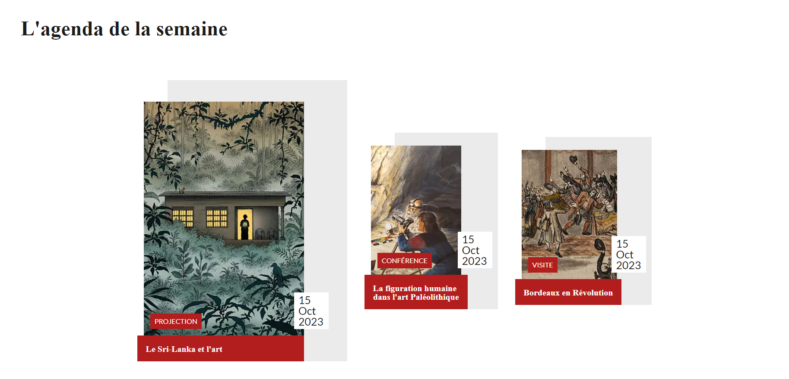

Projet refonte musée d'Aquitaine
Lors de ce projet, nous avons dû réaliser une refonte complète de la page d'accueil du site du musée d'Aquitaine. Pour cela, nous avons dû dans un premier temps réaliser des maquettes sur Figma et ensuite développer en HTML et CSS le site.
Nous avons mis en avant l'exposition du moment disponible dans le musée d'Aquitaine, mais également toutes les expositions disponibles ainsi que l'agenda du musée.
Nous avons dû rendre ce site accessible pour tout le monde et sur tout type d'appareil, notamment sur téléphone. Ce projet a été un véritable travail d'équipe qui nous a permis d'apprendre à utiliser Github et Figma.


 
